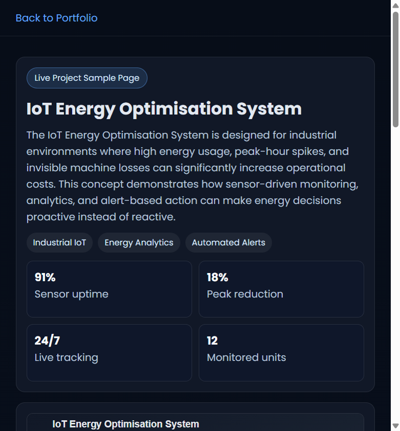

Sensor uptime
Live Project Sample Page
91%
18%
24/7
12
IoT Energy Optimisation System
The IoT Energy Optimisation System is designed for industrial environments where high energy usage, peak-hour spikes, and invisible machine losses can significantly increase operational costs. This concept demonstrates how sensor-driven monitoring, analytics, and alert-based action can make energy decisions proactive instead of reactive.
Industrial IoT
Energy Analytics
Automated Alerts
Peak reduction
Live tracking
Monitored units

Collection Layer
Machine-level sensors capture load, runtime, and temperature data streams.
Analytics Layer
Rule engine flags anomalies and highlights unusual energy usage patterns.
Operator Dashboard
Production managers review shifts, compare units, and trigger maintenance tickets.
Action Workflow
Alerts are routed by severity for quick intervention and measurable savings.
Expanded Project Description
Objective
Build an industry-ready framework that continuously monitors energy use at machine and line level, identifies avoidable consumption patterns, and supports data-backed optimization strategies.
System Approach
Smart meters and IoT sensors collect runtime and load data from equipment. The analytics layer compares actual usage against baseline behavior and flags abnormalities such as idle-time draw, peak overload, or unstable cycles.
Industrial Impact
With dashboard visibility and priority alerts, plant teams can schedule maintenance earlier, rebalance usage during peak windows, and reduce waste. The expected outcomes include lower energy cost per unit, improved process efficiency, and stronger sustainability compliance.
Current Energy Health
Efficiency score by alert category for monitored units this week:
Optimized usage
Needs attention
Critical inefficiency